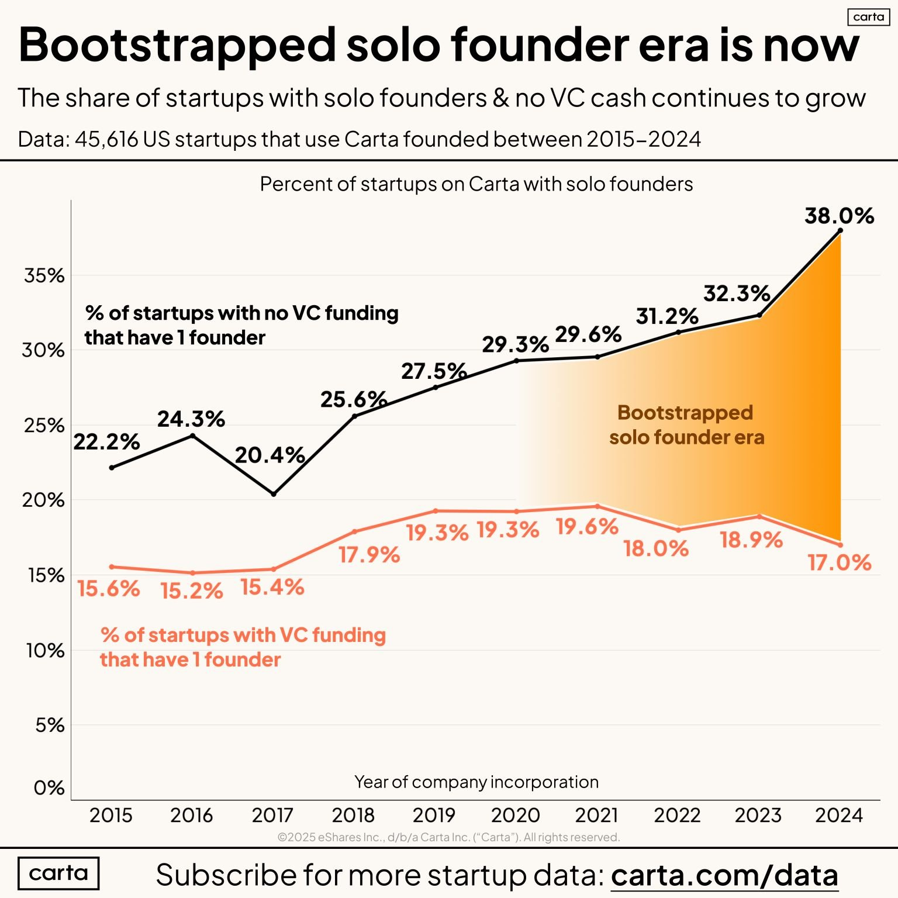

Tiny teams data roundup
I was thinking of starting a crowdsourced list of small teams with massive revenue numbers, but many people are already doing it:
tinyteams.xyz is from Ben Lang (whose newsletter Nexy Play is great). It's a sortable / filterable list of small teams with significant ARR, including Cursor, Lovable, and Midjourney.
IndieHackers did a twitter thread that lists one-person companies with more than $1M in ARR.
Palle Broe, author of the Rule of Thumb newsletter, has visualized the efficiency of AI unicorns across several dimensions, including revenue per employee:

Finally, data from Carta shows that the rate at which solo founders raise venture funding dropped significantly in 2024:
